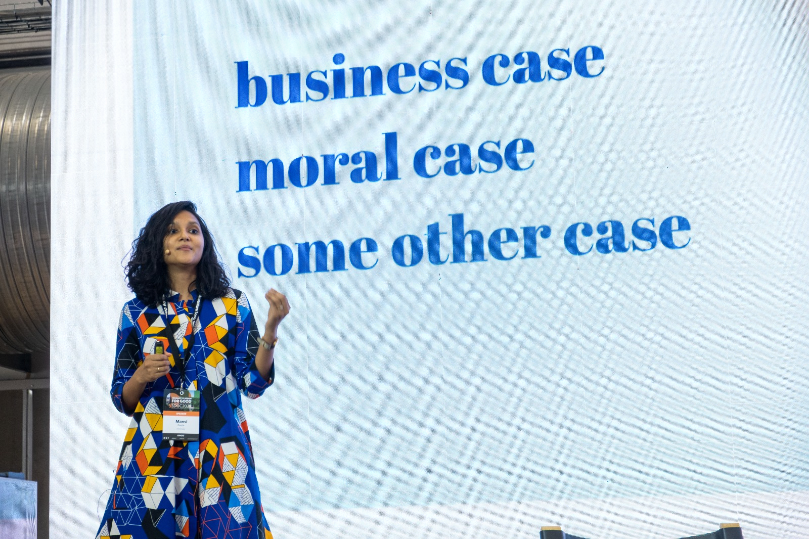

Behaviour, Brand, Creative | Researcher & Strategist
What things, you might ask.
I designed games to understand habits & mental models in reproductive healthcare & financial inclusion. I built brands in unique spaces such as upcycled leather laptop sleeves and modern cowboy boots. I founded Unconform to help organisations center women in their work. I created the Women-Centric Design Toolkit to nudge designers to intentionally design with a gender lens.
I’ve worked in tech, manufacturing, aviation and social impact doing research, marketing, design and more. But, the through-line has never been the industry. It’s been an instinct to understand the problem space and the people in it. I’m constantly asking: what makes people want something, and what makes them act on it?
Today: Building Chalo, Mardi Gras & Unconform.
Placeholder — describe this area of your work.
HIGHLIGHTS
Placeholder — describe this area of your work.
HIGHLIGHTS
Placeholder — describe this area of your work.
HIGHLIGHTS

PUBLIC SPEAKING & WORKSHOPS
CORPORATE & FACILITATION